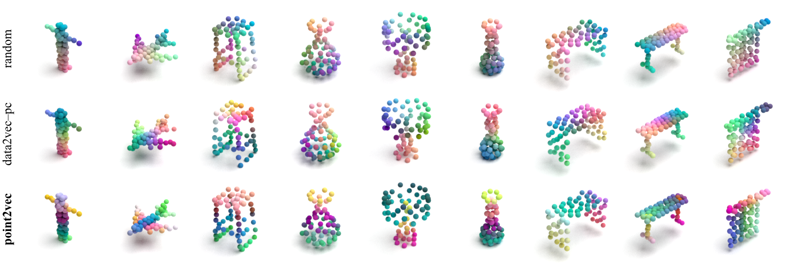
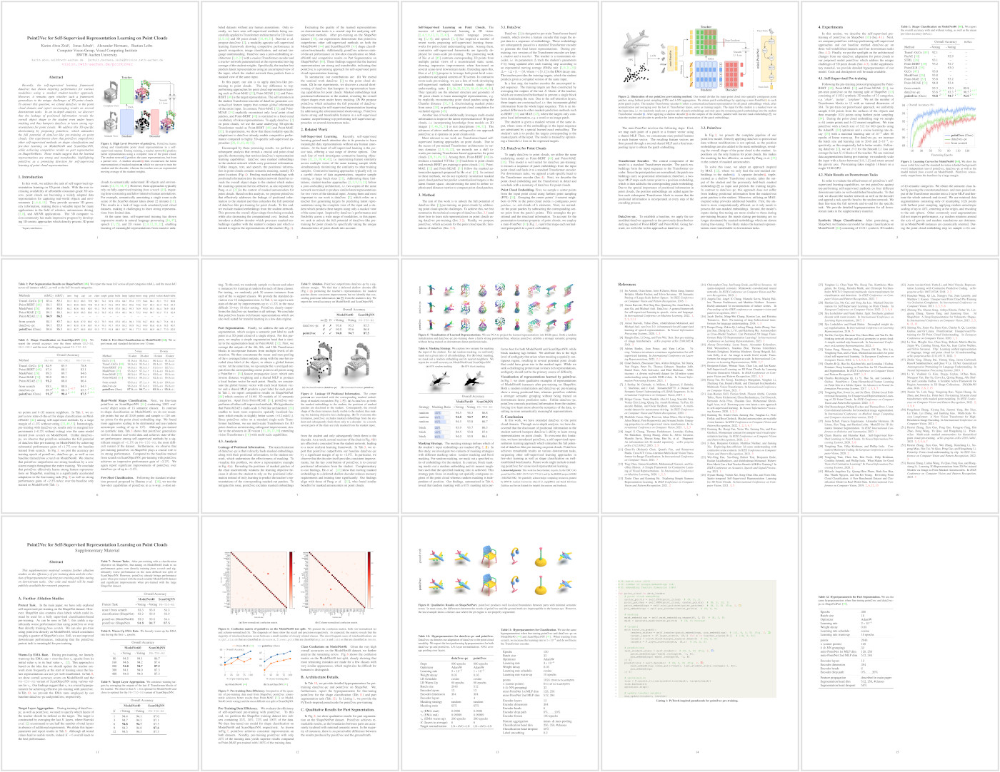

We use PCA to project the learned representations into RGB space. Both a random initialization and data2vec–pc pre-training show a fairly strong positional bias, whereas point2vec exhibits a stronger semantic grouping without being trained on downstream dense prediction tasks.

@inproceedings{abouzeid2023point2vec,
title={Point2Vec for Self-Supervised Representation Learning on Point Clouds},
author={Knaebel, Karim and Schult, Jonas and Hermans, Alexander and Leibe, Bastian},
journal={German Conference on Pattern Recognition (GCPR)},
year={2023},
}